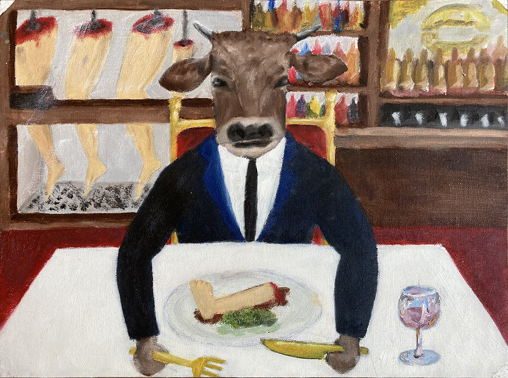

포트폴리오오
skateboard, spray /
W 100cm x H 30cm
The texture appears to be extremely similar, as you can see in the artwork. I was greatly motivated by a famous Japanese artist named Hokusai's painting "The Great Wave off Kanagawa." The Great Wave off Kanagawa, popularly known as The Wave or simply The Wave, is a Japanese ukiyo-e artist Hokusai's woodblock print. It was the first print of Hokusai's series Thirty-six Views of Mount Fuji, which was published probably between 1829 and 1833 in the late Edo period.

이 그림은 ~~~~~